Una vivienda cálida, elegante y funcional, para lo cotidiano y para los encuentros
En este proyecto de diseño integral, el estudio buscó crear una casa que acompañe tanto los momentos cotidianos como los encuentros sociales. Un mismo lenguaje recorre todos los ambientes: materiales nobles, iluminación cálida y líneas puras que construyen una atmósfera contemporánea y acogedora.
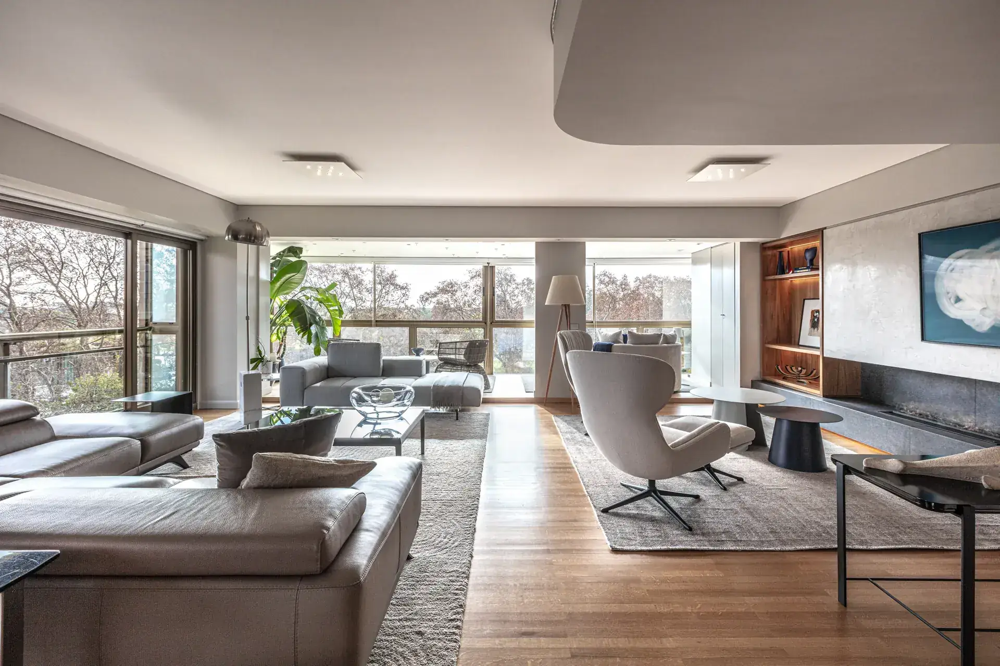
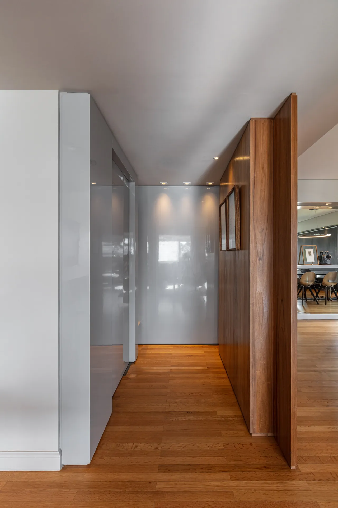
Madera y laca
Un panel de madera natural y un frente laqueado acompañan la entrada y esconden el guardado, con luz rasante que marca el recorrido. La distribución y las visuales se trabajaron para ganar amplitud y abrir la casa hacia el exterior.
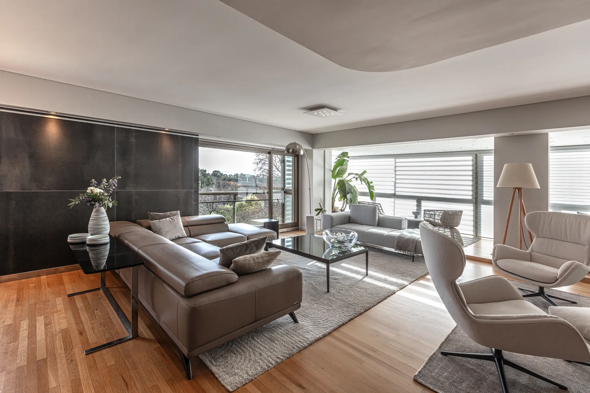
Profundidad y contraste
Los revestimientos oscuros se combinan con superficies claras y madera natural, y generan profundidad, contraste y equilibrio visual.
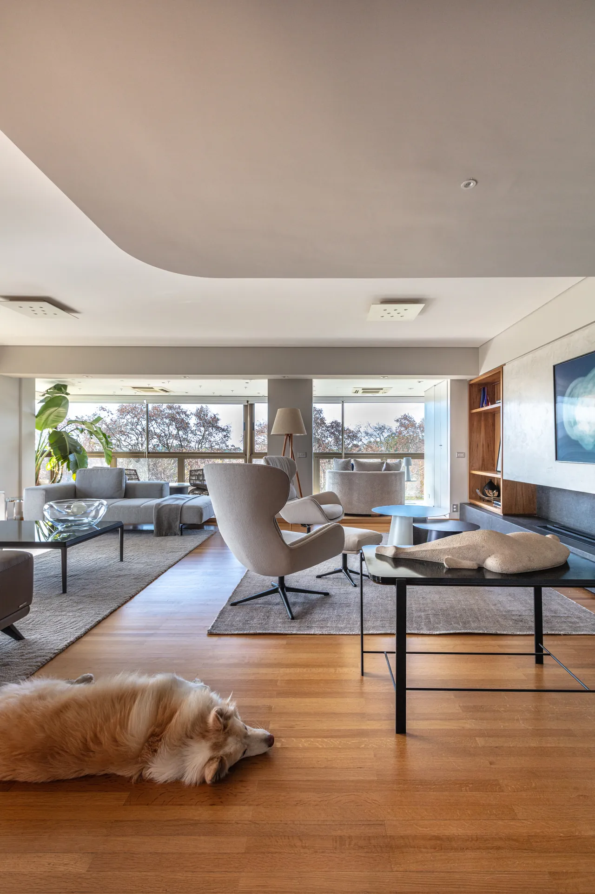
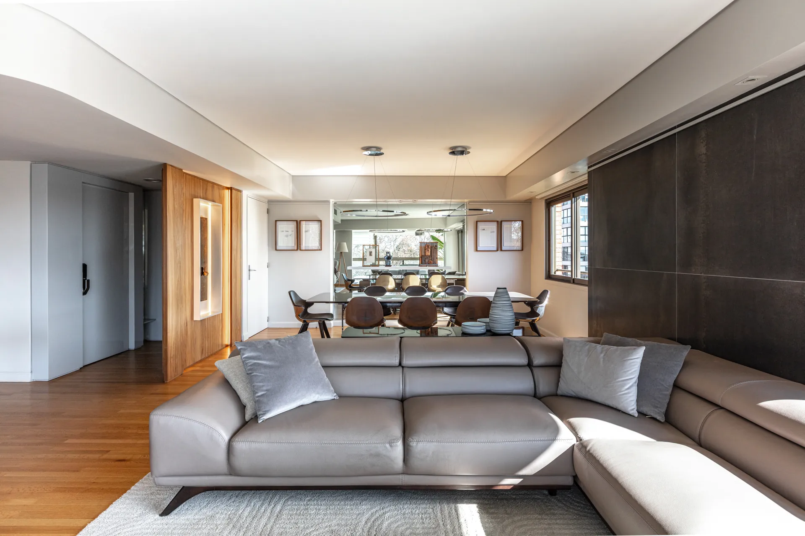
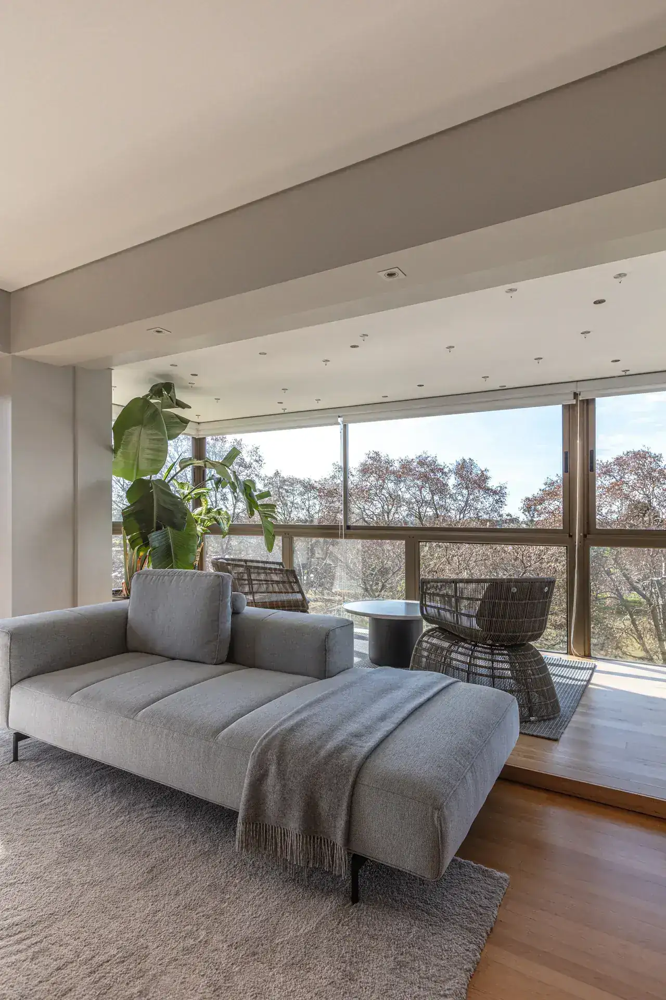

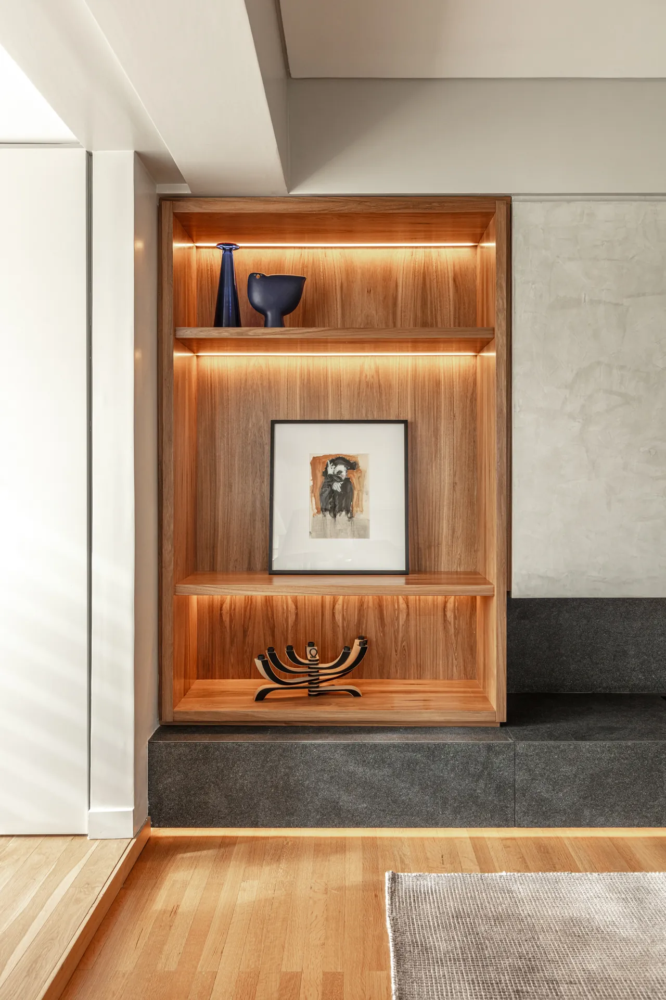
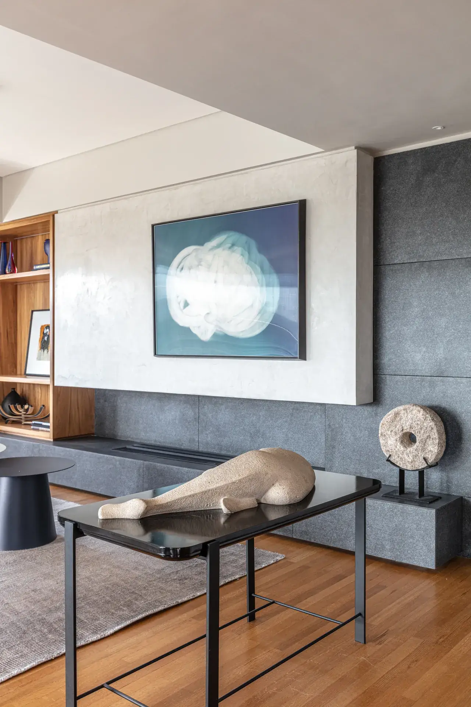
Luz en cada estante
Muebles a medida y guardado integrado, diseñados para cada sector. La iluminación, en distintos niveles y escenas, destaca objetos y texturas.
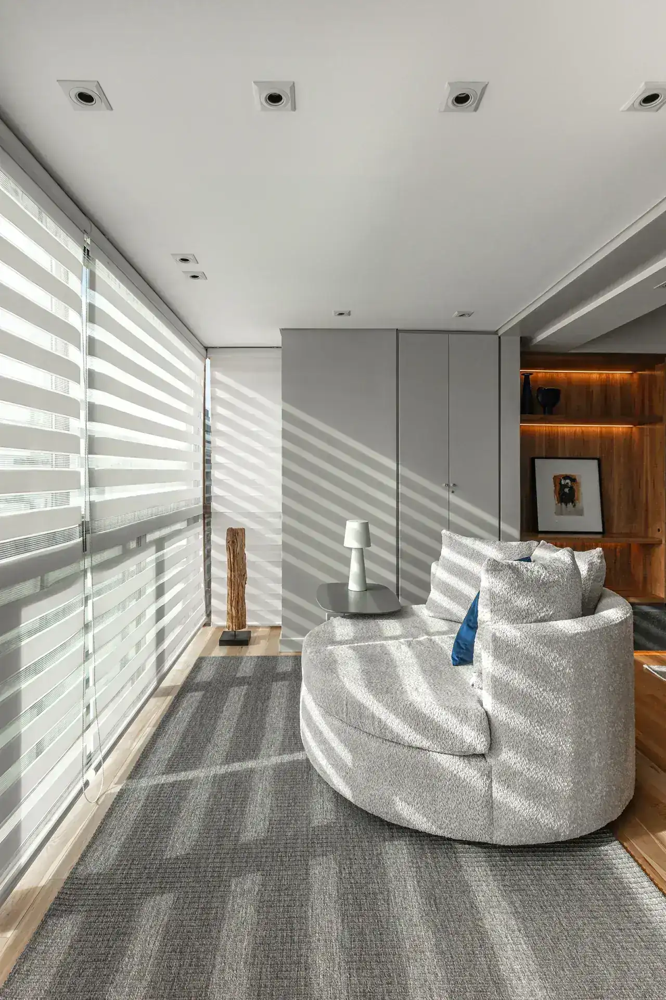
Luz filtrada
Un rincón de lectura junto al ventanal. Las cortinas filtran el sol y la biblioteca iluminada acompaña desde el fondo.
Materiales nobles, iluminación cálida y líneas puras, en una casa donde cada detalle forma parte de una propuesta integral
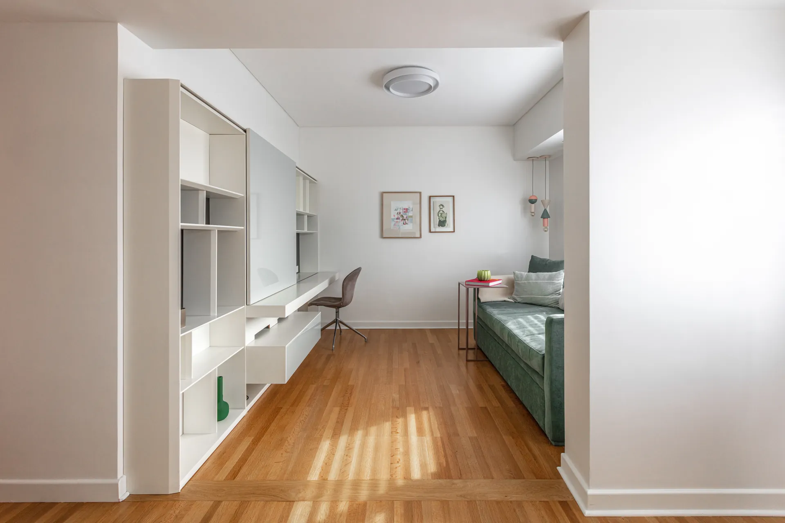
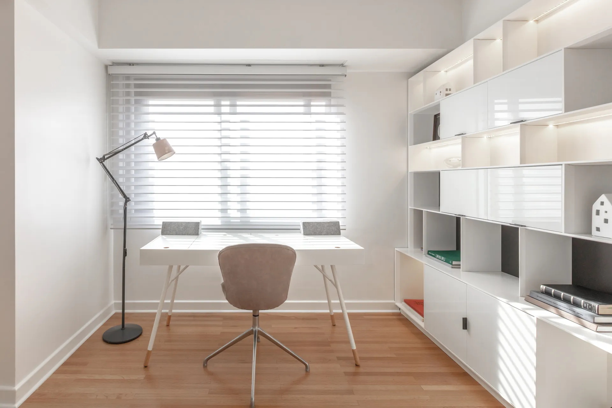
Para trabajar
Bibliotecas blancas a medida, con luz integrada, ordenan libros y objetos y dejan el plano de trabajo despejado.
Vista a los árboles
Un frente de guardado blanco integra la televisión y un nicho de madera iluminado, frente al ventanal.
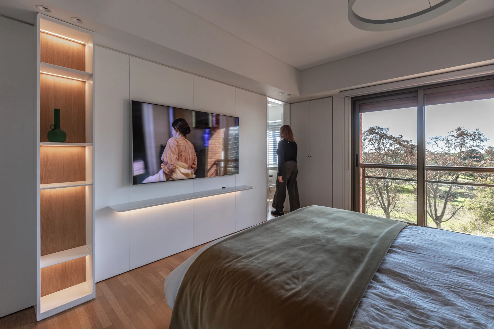
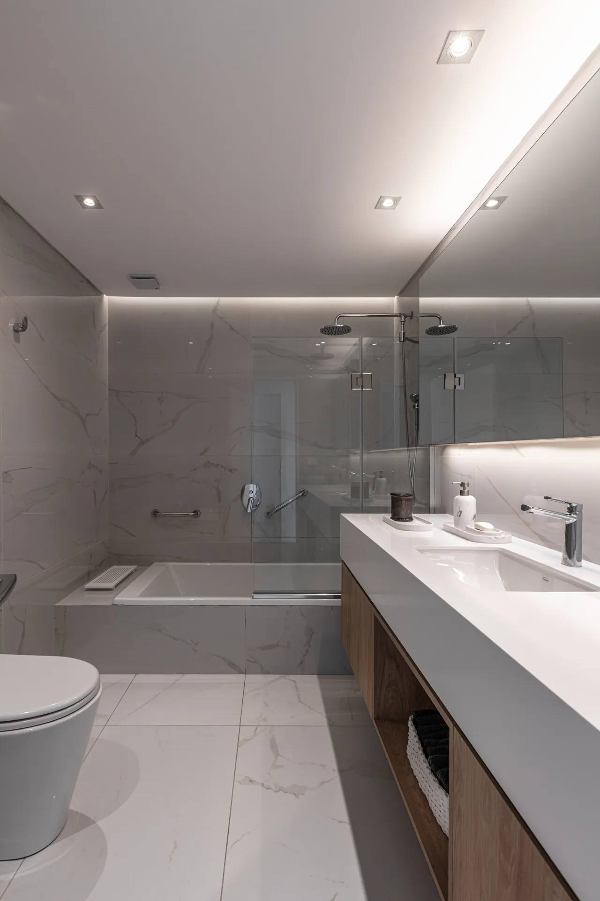
Claro y sereno
Revestimiento veteado, un vanitory de madera con mesada blanca y luz indirecta detrás del espejo.
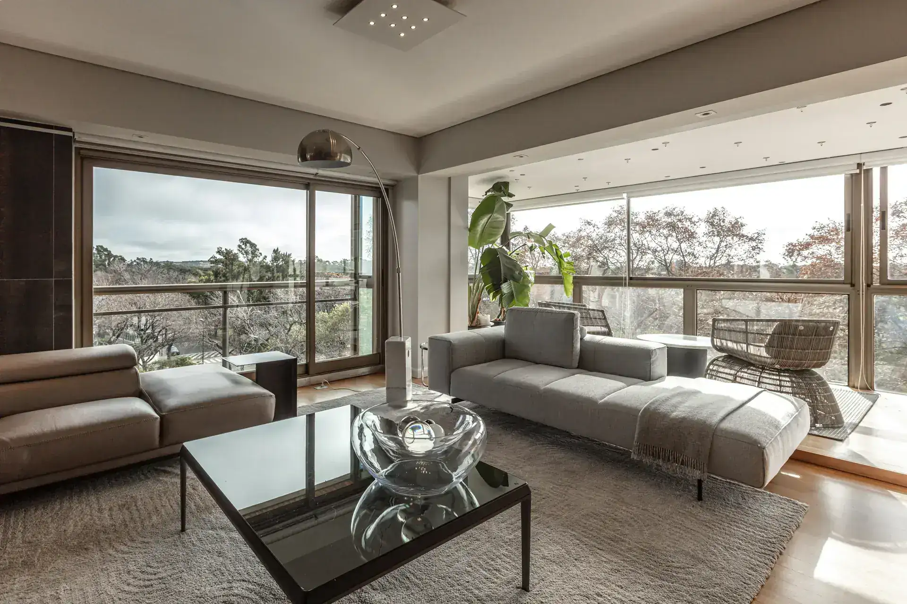
Diseño y forma de habitar
Una casa sofisticada, luminosa y confortable, donde cada detalle forma parte de una propuesta integral y donde diseño, funcionalidad y forma de habitar conviven en armonía.
Luz y materia
Este proyecto es un proyecto integral de interiores: interiores, iluminación, muebles a medida y equipamiento, resueltos con un mismo criterio en toda la casa.
Conocer los servicios
Otros proyectos
Ver todos los proyectos


Cada proyecto empieza con una conversación
El estudio desarrolla proyectos integrales de vivienda en Argentina, España y Estados Unidos.